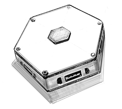
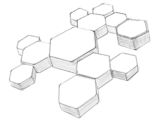

Stop compiling. Start tinkering.
Experimental Platform provides an easy way to deploy apps on local hardware without the hassle to setup the environment. It enables developers and makers to focus on the things that matter.
Hello World!
After deployment your app will instantly be available on the internet while it's still hosted on your local machine.
-
Rails
-
PHP
-
node.js
-
Python
-
Docker
1. Get the node.js "hello world" example
git clone https://github.com/heroku/node-js-sample.git
cd node-js-sample
2. Choose a name, add git remote and deploy
git remote add platform ssh://dokku@platform.local:8022/app-name
git push platform master
1. Get the Rails "hello world" example
git clone https://github.com/experimental-platform/rails-hello-world.git
cd rails-hello-world
2. Choose a name, add git remote and deploy
git remote add platform ssh://dokku@platform.local:8022/app-name
git push platform master
1. Get the PHP "hello world" example
git clone https://github.com/heroku/php-getting-started.git
cd php-getting-started
2. Choose a name, add git remote and deploy
git remote add platform ssh://dokku@platform.local:8022/app-name
git push platform master
1. Get the Python "hello world" example
git clone https://github.com/guaq/heroku-in-a-bottle.git
cd heroku-in-a-bottle
2. Choose a name, add git remote and deploy
git remote add platform ssh://dokku@platform.local:8022/app-name
git push platform master
1. Get the "hello world" Dockerfile example
git clone https://github.com/experimental-platform/dockerfile-hello-world.git
cd dockerfile-hello-world
2. Choose a name, add git remote and deploy
git remote add platform ssh://dokku@platform.local:8022/app-name
git push platform master
Why do we need this?
With growing trends like IoT and Smart Home an armada of devices uploads data into the cloud. That is why it becomes more important than ever to offer a decentralized alternative.
Experimental platform is the first step towards a digital hub for people that strive for independence.
Join us as a hard- or software developer to create exciting applications in a fun and sustainable way.
GitHub Mailing listHow do I get it?
Experimental Platform can be run on almost any standard x86 hardware. Though we recommend running it on dedicated hardware, making it truly independent and accessible 24/7.
Right now we are busy working on a module system that makes integrating sensors, actuators and other hardware components very easy. Scroll down to see a few pics how our current lab prototypes look like.
In the meantime you can get the Alpha Hardware and start developing.
Now / Alpha Version

To jumpstart with Experimental Platform and save on your electricity bill, we sourced a very affordable low power hardware and preinstalled Experimental Platform on it.
In October / Beta Version
Our commitment is to develop this version into a custom beta hardware with unique capabilities to control and program sensor and actuator networks your apps will be able to use.
End of the Year
Both perfect systems for development. But with joined effort we want to release a custom made end user product by the end of the year, including dead simple to use modules to automate everyday tasks.